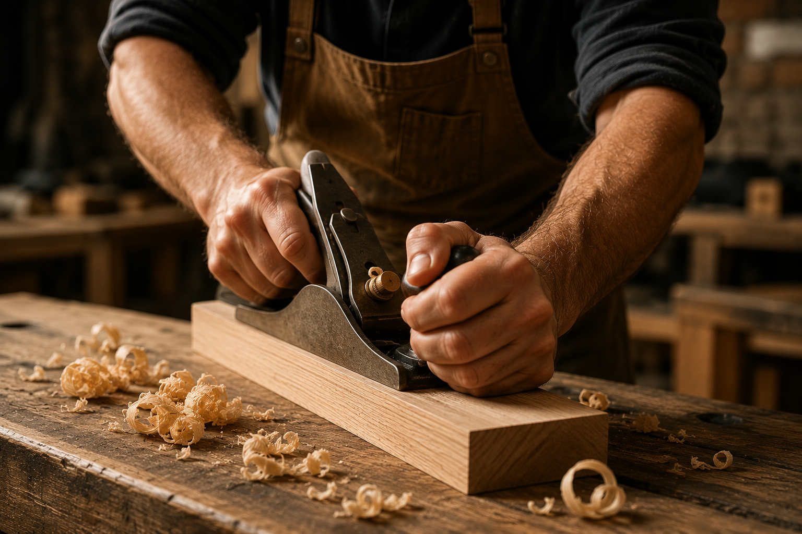
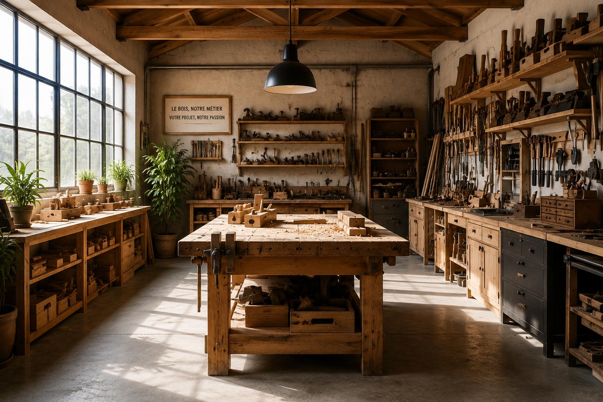
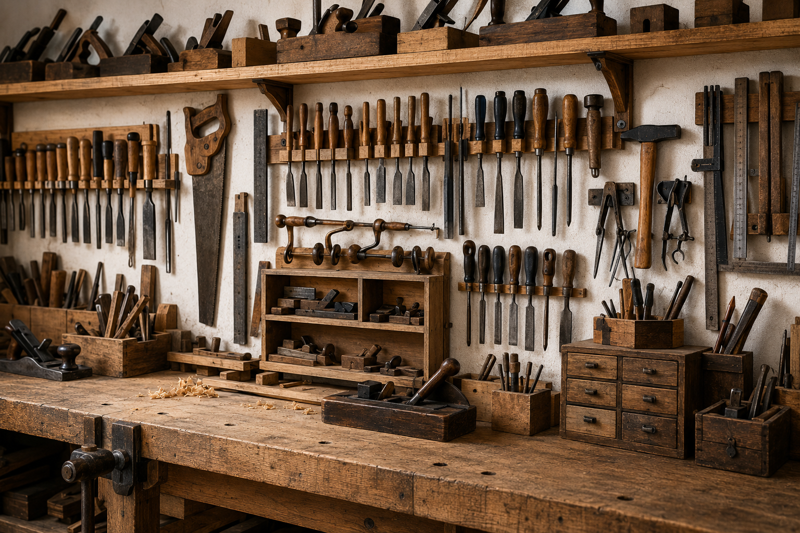

Dessiner
Comprendre les volumes et anticiper chaque assemblage.
Menuiserie artisanale · Strasbourg
Des pièces uniques, dessinées pour votre espace et façonnées pour traverser le temps.
Explorer les projets ↗Notre approche
01 — La matière
Chaque projet commence par l’écoute du lieu, de ses usages et de ceux qui y vivent. Le bois est ensuite sélectionné, travaillé et assemblé avec précision dans notre atelier.

Six domaines.
Une même exigence.
02 — Le savoir-faire
Conception, optimisation et fabrication
↗ 02Création, rénovation et habillage
↗ 03Rangements intégrés et personnalisés
↗ 04Bois massif, finitions et restauration
↗ 05Aménagements extérieurs durables
↗ 06Tables, bureaux et bibliothèques
↗03 — Les essences
Chaque essence possède une couleur, un toucher et une personnalité qui lui sont propres.
France · Forêts gérées durablement
Résistant, intemporel et marqué par un veinage généreux.
04 — Dans l’atelier
Les machines préparent. Les mains ajustent. L’œil contrôle chaque détail avant que la pièce ne quitte l’atelier.
Comprendre les volumes et anticiper chaque assemblage.
Découper, raboter et ajuster avec une grande précision.
Poncer et protéger pour faire ressortir toute la matière.
05 — Projet choisi

Étude et préparationUne réalisation pensée comme une architecture intérieure : rangements discrets, niches ouvertes et continuité parfaite avec les lignes de la pièce.

Sélection de la matière06 — Votre idée